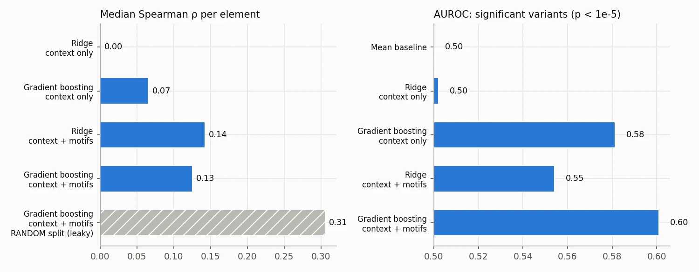
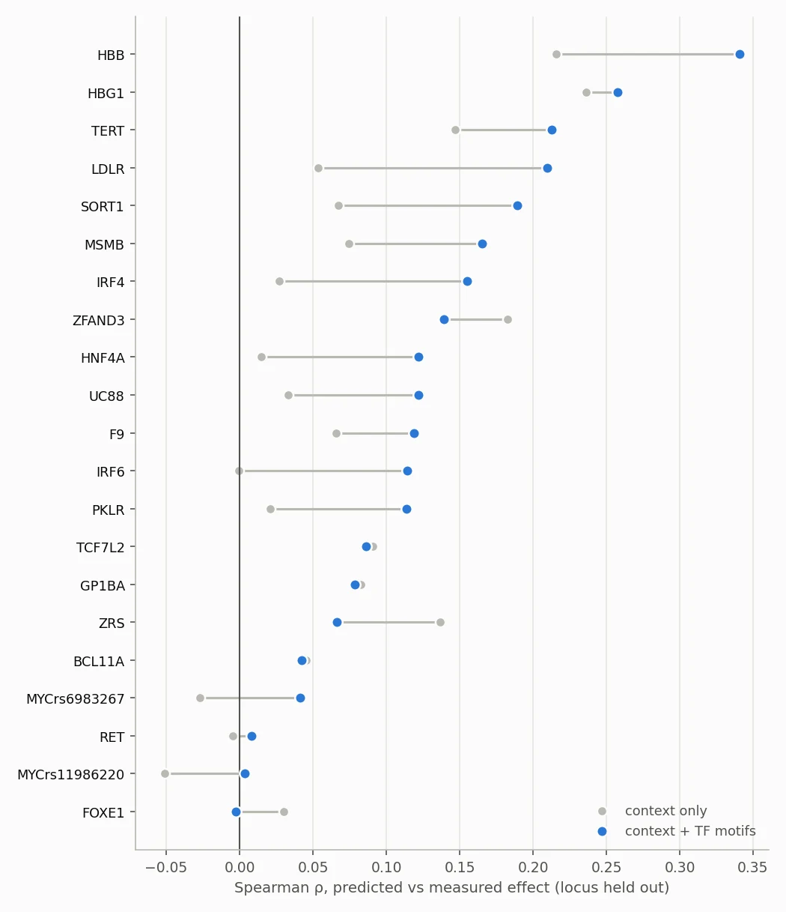

Regulatory genomics · Machine learning
RegulonML: predicting regulatory variant effects in unseen promoters and enhancers
Can we predict how a single-base change in a promoter or enhancer alters activity, for a regulatory element that wasn’t in the training data? Using a saturation-mutagenesis MPRA, the model sees only DNA sequence and is evaluated with leave-one-locus-out cross-validation, so every prediction is for DNA it has never seen.

Generalising to regulatory DNA the model hasn’t seen
Kircher et al. measured every possible single-nucleotide substitution and 1-bp deletion in 21 disease-associated regulatory elements. The hard, useful question isn’t fitting those elements; it’s predicting variant effects in a new element from sequence alone.
Version 1 leaked the answer
The first version predicted effects from features that included each variant’s DNA and RNA read counts, which are the measurements the effect is calculated from. It also split by dataset label, so the same TERT, PKLR, LDLR and SORT1 DNA appeared in training and test. Under a proper split, every model did worse than predicting the mean.
Version 2 fixed each problem explicitly:
- Sequence-only features. Read counts are used only for QC filtering, and a test enforces this.
- No genome download. Each element’s reference sequence is rebuilt from the mutagenesis data itself.
- Motif scoring. Binding-site creation and loss for every SNV and deletion against all JASPAR 2026 vertebrate motifs, on both strands, with a vectorised scorer checked against brute force.
- Honest evaluation. Leave-one-locus-out cross-validation with per-element Spearman, AUROC and AUPRC against explicit baselines, and the leaky split reported alongside so the size of the leakage is visible.
Modest, real gains, and a quantified trap
| Features | Model | Median ρ | AUROC | AUPRC |
|---|---|---|---|---|
| — | Mean baseline | — | 0.50 | 0.18 |
| Sequence context | Gradient boosting | 0.07 | 0.58 | 0.21 |
| Context + TF motifs | Ridge | 0.14 | 0.55 | 0.22 |
| Context + TF motifs | Gradient boosting | 0.13 | 0.60 | 0.24 |
| Context + TF motifs (random split, leaky) | Gradient boosting | 0.31 | — | — |
Motif features roughly double the gradient-boosting model’s held-out correlation and improve 15 of 21 loci. The best models rank variant effects better than chance in 28 of 29 held-out datasets. Letting the same element appear in training and test more than doubles ρ, which is exactly the optimism the first version fell for.

The TERT promoter, with no training
The two recurrent cancer mutations in the TERT promoter, C228T and C250T, are the strongest activating variants in the assay and are known to create new ETS-family binding sites. The motif scoring recovers this with no training: among 878 TERT variants they rank 3rd and 11th (joint) for ETS-site creation. With TERT held out, the model ranks C228T 15th of 878 for activation but misses C250T, because activating variants are rare in the training loci.

What would improve it
- Motif scores ignore which transcription factors are expressed in each cell line; cell-type TF expression is the obvious next feature.
- A deep sequence model (for example Enformer or Borzoi ref/alt predictions) is the natural comparison.
- Only 21 loci: per-locus results are noisy and the model rarely sees activating variants.